Counter-Strike 1.6 simple wallhack tutorial (OpenGL)
This tutorial for begginers tells how to make a simple wallhack for CS 1.6 OpenGL engine. We'll be using Ollydbg.
Some base knowledge of OpenGL would help, though I'll try to explain it easy.
Some Skills using Ollydbg are required. We'll need some constants defined in OpenGl library: OpenGL constants in hex
We also need a Counter strike client non steam (don't try pull any of these tricks on steam version!) configured to use opengl engine.
Part 1. Lousy hack.
First of all we'll be using an OpenGL function here called glDepthFunc. Let's take a look at function specification
So this function sets the the condition for pixels to pass according to weather the pixel is closer or further to the eye.
This can be used to make the wall solid so you can't see what's behind it. Now launch Ollydbg & CS client. Using Ollydbg attach to the CS process.
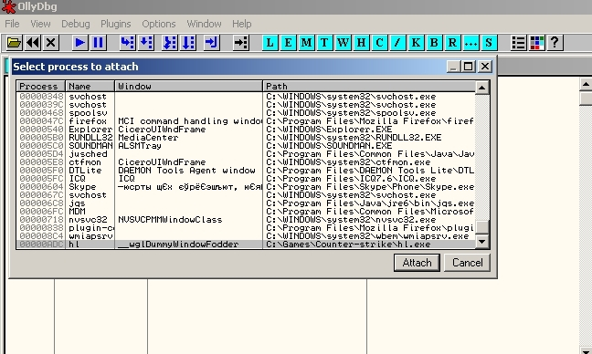
If you did'nt end up in hl module once the debugger is paused use "execute till user code" to get to hl module. Once you're
there right click on the main disassembly window and choose "search for" -> "name in all modules" and in the new window find function glDepthFunc.
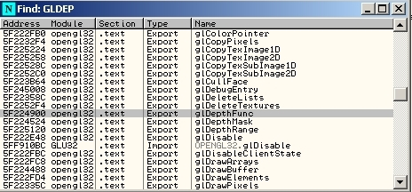
Right click on the line with our function and toggle breakpoint. Then Run. Now connect to a server or start a new game. You should stop here:
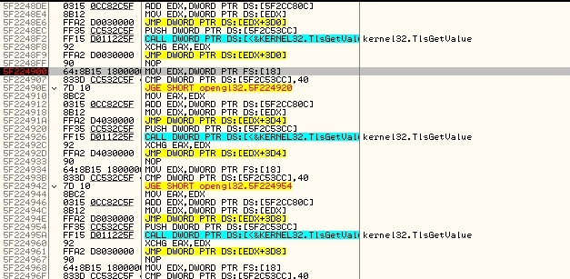
Now disable the breakpoint (in the breakpoints window) and execute till user code. you should stop here:
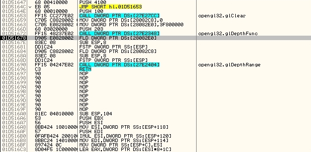
Notice that the function takes 203 as the one an only argument.
#define GL_NEVER 0x0200
#define GL_LESS 0x0201
#define GL_EQUAL 0x0202
#define GL_LEQUAL 0x0203
#define GL_GREATER 0x0204
#define GL_NOTEQUAL 0x0205
#define GL_GEQUAL 0x0206
#define GL_ALWAYS 0x0207
We see that OpenGL is instructed to draw only those pixels that have less or equal depth. Lets change it to GL_ALWAYS = 207. to pass all pixels.
change 203 to 207, hit run and connect ot server once again. You should get something like this:
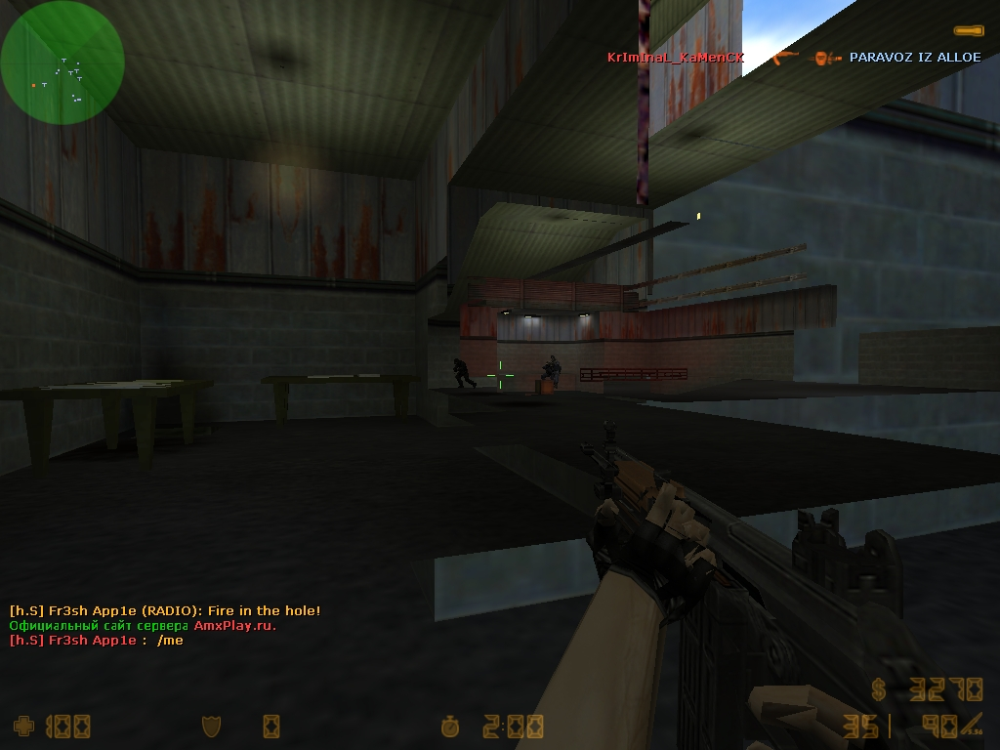
Everything is messed up but most of the walls are removed and you can see the models behind them.This is the simplest and the worst.
Part 2. Models.
Here we will find the part of code that is responsible for game model drawing. To draw a dynamic model one should use the
glVertex family of functions. Given coordinates or coordinate arrays of different type they put a vertex in the game world.
See here.I used some luck doing this part of research.
Lets start with glVertex3f. Open the "name in all modules" window as we did it in the previous part and find there gl Vertex3f function:
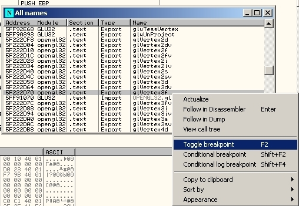
Set breakpoint on this function (like you did it with glDepthFunc), hit run and connect to server or start new game. You should stop here:
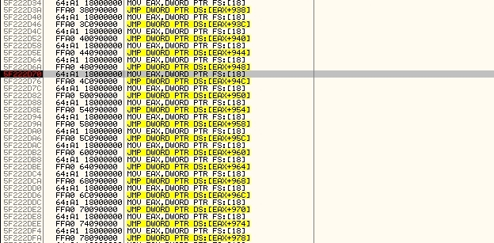
Disable this breakpoint in breakpoints window and execute till user code. You should stop here:
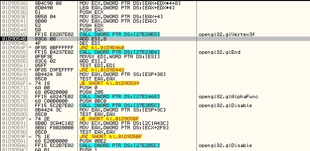
Now the glVertex family of functions must be preceeded with glBegin call and followed by glEnd call. Function glBegin tells
OpenGL how to draw a set of vertices defined between glBegin and glEnd calls.See here.Changing the argument of glBegin
we will change the way OpenGl treats vertices and as a result the way they appear on the screen. This way we will determine what
is drawn by this part of code. Scroll up the disassembly window and find the first glBegin call (from bottom to top):
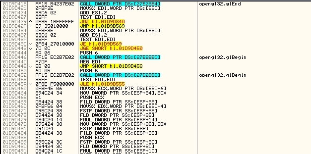
Five in the argument stand for triangle strip. It means that vertices should be treated as vertices of triangles so that triangles
are drawn in result. Lets draw lines instead. change "push 5" to "push 2".
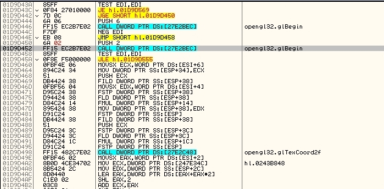
Hit run and connect to server or start a new game. You should get something like this:
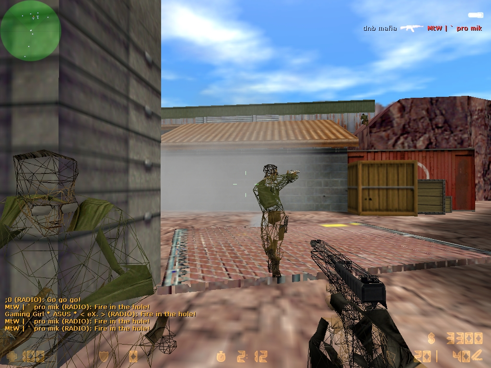
We see that most parts of models are drawn with lines. Everything else is not affected. This means that this part of code is
responsible for drawing models. We will use this fact later. We just have to remember the address of push and call glBegin.
Part 3. World.
Now lets take a look at the glVertex3fv function. It is pretty much the same thing as the glVertex3f function. It takes an array
instead of 3 coordinates. Set a breakpoint:
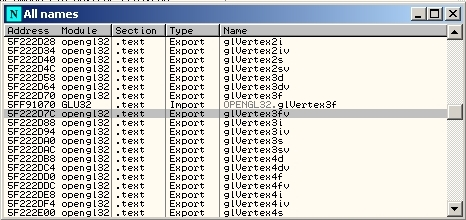
Run,connect to server/start new game, stop at the breakpoint
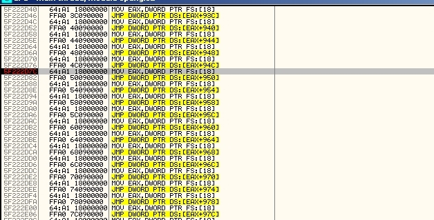
Disable breakpoint and execute till user code. You should break here:
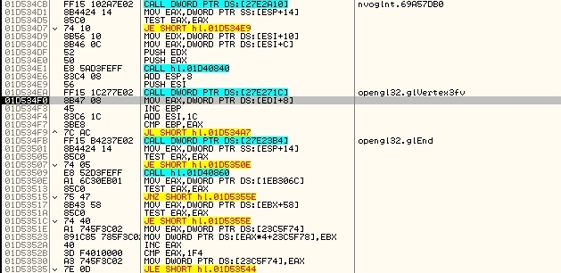
Scroll up to find glBegin call:
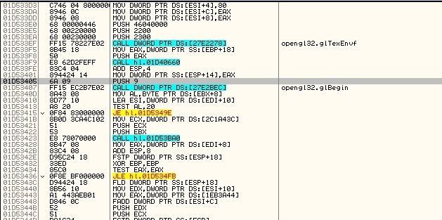
We are drawing with polygons here ("push 9"). With the same intention as before change "push 9" to "push 2", hit run and
start new game.You should get this if you don't move:
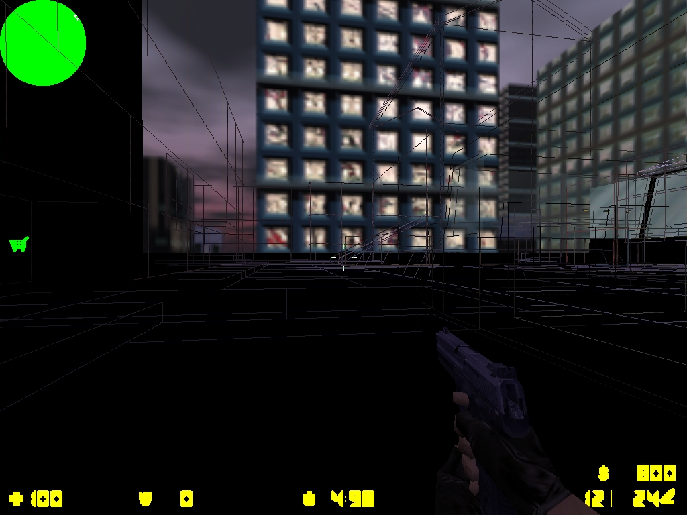
We see that the world is drawn in wires (lines). We found the part of code that draws the world. Remember the glBegin address for further use.
Part 4. Patch 1. Transparent walls.
Now we will try to make transparent walls. It's much better to have them transparent than removed completely.
To make transparency work in OpenGL we shall turn off the depth test so that no pixels are left aside, turn on alpha blending and
adjust alpha value to make it more comfortable to use. All of this should be done before glBegin call. If you have some trouble with constants for calls please refer to OpenGL constants in hex
. This will take a lot of space so wi shall find address range which is empty. I found it at 1cf707e. We will inject code at 1cf707e.
We will patch the original code and place there a call of our function at 1cf707e. Here is the call:
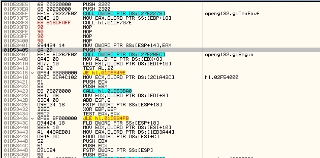
I have found a suitable address to place my call. At this address was another call so we shall copy the original piece of code from here to our function.
Those will be the first 3 instructions in our function:
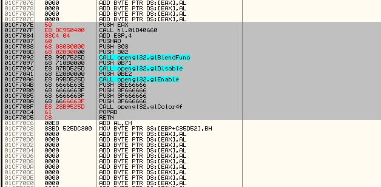
Then we save all registers with pushad. Configure alpha blending with glBlendFunc(I used flags that are recommended in common tutorials).
The next two calls are responsible for disabling depth test and enabling alpha blending. The next call glColor4f adjusts alpha value.
You can play with the paraeters for a better look. I have set all 4 values here experimentally. And here is what we get:
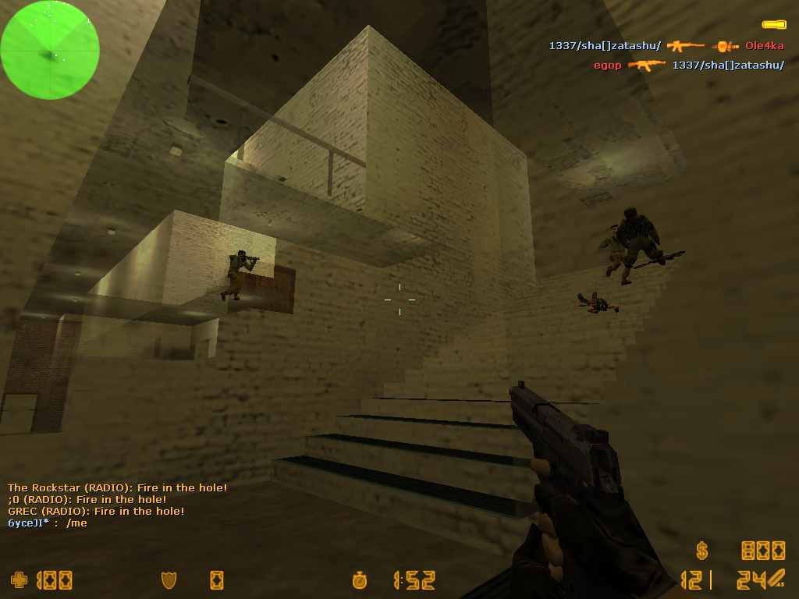
We can still see through walls, but now they are transparent. We can (hardly) tell where the wall starts. As for the automatic patcher I'll describe it later. Patcher code is pretty much the same for this and the next patch.
To write a patcher we'll just need these offsets and patches themselves.
Part 5. Patch 2. Neat.
Are you thinking what I'm thinking? Now that we have found the places where the models are drawn we can turn off depth test
before the models are drawn and turn it back on when the models are already drawn. Remember the offsets from part 2? Let's do it!
First replace the second glBegin call with a call to our patch:
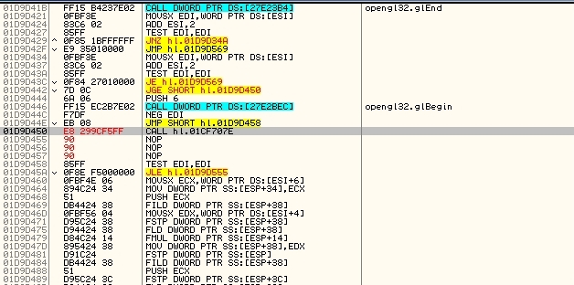
In the first patch function we will disable depth test and call glBegin like so:
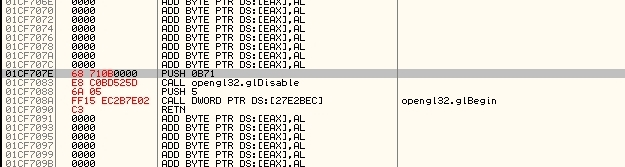
Now go down to the first glEnd call in the assembly listing (original call where vertices are drawn) and replace it with a call to our second patch:
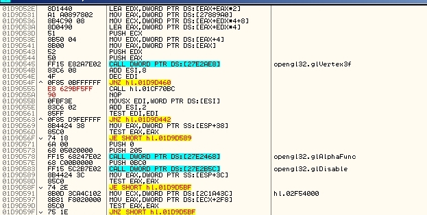
And the second patch looks like this:
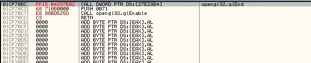
Here we call the glEnd and we enable depth testing back so the rest of the world is drawn correctly.
And here is what we get:
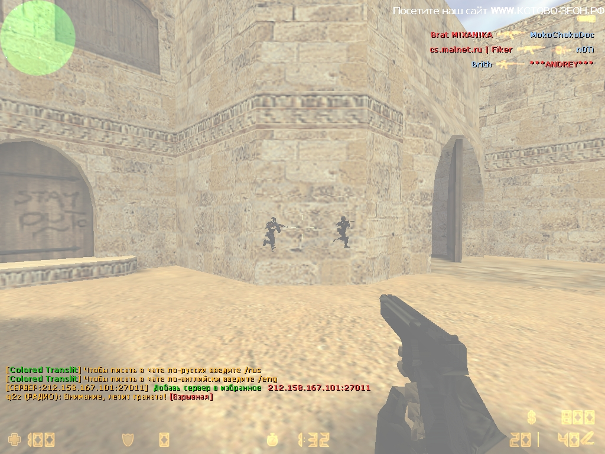
Models are sloppy and you can get bugs with crates.
Part 6. Automated patching.
Now we will make a patcher for convenience. First with find window name with FindWindow, then get it PID with GetWindowThreadProcessId.
Once we have it's PID we will get process handle (OpenProcess)
and patch the process with WriteProcessMemory.
After all close process handle and we're done. Code. The ones with letter "b" are for turning off the hack playing normally.